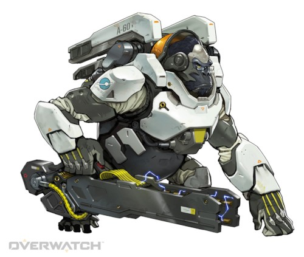

윈스턴 [돌격]
소개
본명: 윈스턴, 연령: 29
직업: 과학자, 모험가
활동 근거지: 호라이즌 달 기지 (예전 기록)
소속: 오버워치 (예전 기록)
"상상력이야말로 발견의 어머니입니다."
윈스턴은 극도로 지적인, 유전자 조작 고릴라이다. 그는 훌륭한 과학자이자 인류 잠재력의 강력한 옹호자이다.
호라이즌 달 기지는 인류가 우주 탐험 재개의 첫걸음으로 건설한 시설이었다. 기지에는 유전자 강화 고릴라들도 있었는데, 이는 우주에서 오래 생활한 생명체에게 어떤 현상이 나타나는지 알아보기 위함이었다.
해럴드 윈스턴 박사의 감독 아래 유전자 요법을 받던 이 고릴라들 중 하나가 엄청난 두뇌 발달을 보였다. 박사는 그에게 과학을 가르치고, 인간의 천재성을 보여주는 이야기들로 그를 자극했다. 젊은 고릴라는 매일같이 과학자들의 실험을 돕고 자기 서식처 창문 너머 멀리 보이는 푸른 행성을 바라보면서, 그곳에서 자신을 기다리는 무한한 가능성을 꿈꿨다.
하지만 다른 고릴라들이 폭동을 일으켜 과학자들을 죽이고 기지를 차지하면서 그의 삶은 갑자기 혼돈에 빠져들었다. 그는 깊이 사랑하고 따르던 보호자인 윈스턴의 이름을 이어받고 로켓을 급조해 지구로 탈출했다. 그곳에서 윈스턴은 자신이 경탄하던 인류의 모든 가치를 대변하는 조직, 오버워치를 만나 그 안에서 새로운 자리를 찾았다. 마음속 깊이 스며든 영웅적인 이상에 따른 삶을 비로소 살 수 있게 된 것이다.
오버워치가 해체되면서 윈스턴은 다시 한 번 자신이 꿈꾸는 세상에서 분리되어 은둔 생활에 들어갔다. 하지만 그는 영웅적인 삶을 살 수 있는 날이 다시 돌아오기를 애타게 바라고 있다.